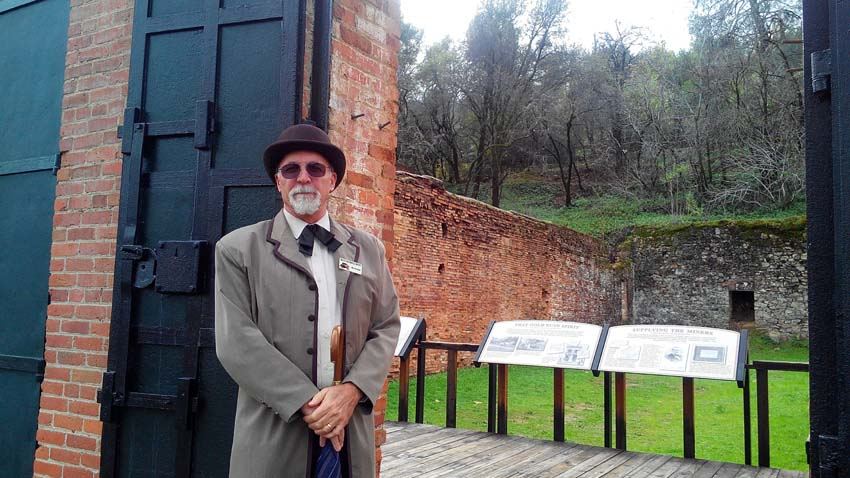
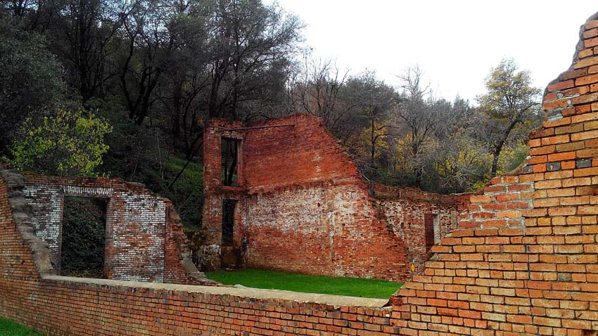
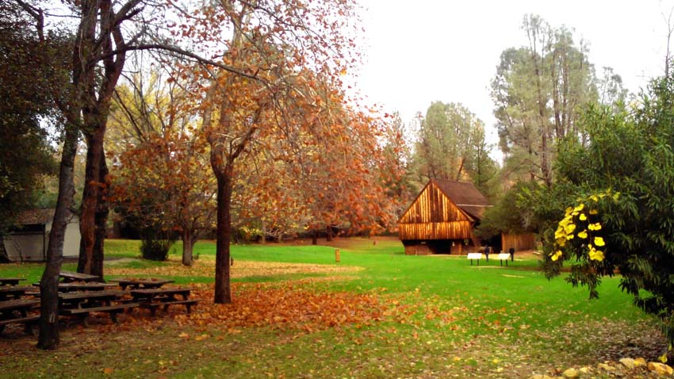

There's Gold in Them Thar Hills! - Old Shasta City
My husband and I usually take our friends from down south on a quick trip through this adorable one-road town on the way to Whiskeytown Lake. This "tour" is often short-lived as we are almost always on our way to do something else. But with every passing of this quaint, ghost-like town, I would stare out the car window and wonder about all the secrets the ruins these iron-doored, red-brick buildings held deep within their walls. I could literally feel the town, the people, the bustle of commerce-past as we passed by the shops, passed the Victorian houses, many of which still held a semblance of their old glory.
So, this time on our way to Whiskeytown Lake, it was quite a treat to see an unusual amount of activity taking place on the ramshakle boardwalk that whispers of it's heydays-past, activity we have never seen before. The Shasta Historical Society was doing a tour! Now was my opportunity to explore this quaint, bucolic town and learn more about this awesome relic from the Gold Rush days!
We parked the car and crossed the street to meet Mike. He was an extremely friendly, informative ombudsman for the Shasta Historical Society, and he gave us so much information that I had to pull out a pen and paper so that I could recount it all
As I had already assumed, built in 1853, this city was indeed built in answer to that famous yellow metal. Gold was discovered in Shasta County in 1849, and this sparked the “second coming” of the California gold rush. Within 6 months, this small area was inundated with men, hauling along and transplanting their entire families, in pursuit of something better. With over 500 people erecting make-shift homes, it quickly became a veritable tent city. Then the city continued to grow quickly as more entrepreneurial types came in answer to the needs of these families, and Shasta City was soon established.
Shasta City, however, was much more than the the simple “miner town” I imagined. Mike informed us that Old Shasta City was, in fact, the major stop for shipping endeavors coming up from the Sacramento River, and that it was considered one of the most important California towns, right up there with San Francisco and Sacramento, our state capitol.
In order for all the miners and frontiersmen to get their staples, the Sacramento River was travelled upstream from the San Francisco Bay and then the supplies were dumped in Red Bluff because the large boats could no longer continue on the waterway that had became too shallow. Everything was dumped at this juction and then carted by stagecoach the rest of the way here to Shasta City. It was the major commercial hub for the north, named the “Queen City,” and held its distinction as the county seat. In the heyday of this magnificent historical site, it was not unheard of to have over 100 mule trains stop here to unload and upload goods on their way into the mountains to meet with the men searching for gold.
It was so nice to see the town lively, with children there, learning about history. The Bakery made cookies and handed them out freely to anyone who had a hankerin’…

The merchant’s tended their stores, fully dressed in 1850’s merchant’s attire…

Knowledgeable blacksmith's gave instruction to the dying vocation...
Park Ranger’s held court over a boiling cauldron of bees-wax in front of one of the deserted mine shafts that went deep into the side of the mountain, where we were allowed to make candles in the style of a candle maker from 1852… It was heartwarming to watch everyone learning about the process of dipping the “wicks” into the wax and then dipping the growing candle into a cold bucket of water, excitedly watching as the candle grew rotund.
Unfortunately, Mike also explained that the “Queen City” of the north did not last very long. When, in 1888, the Central Pacific Railroad connected the city of Redding to the new railroad tracks being laid, it basically cut off Shasta City to this new form of transportation, and the city dwindled into a semi-ghost town. I use the term “semi-ghost town” because it has never been abandoned. Adorable Victorian style cottages still stand, with beautifully designed walkways and layered landscaping made from river rock, and are still occupied. Shasta City now has a population of 1,700 people, although you’d be hard-pressed to find them all, and the old courthouse is used as a museum to an unprecedented collection of early California artwork, donated by the benevolent Mae Helene Bacon Boggs.
This is a great event for the entire family. There are parks available for visitor to rest, use the restroom and enjoy some lunch at a park bench.
- CA-299, Shasta City, CA
- Take Intersate-5 to the CA-44 West exit; Merge onto Ca-299 W; Follow on up